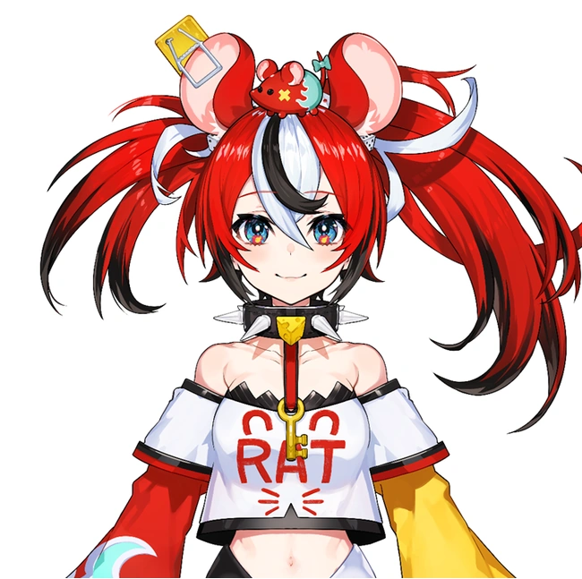

|  |
| Ceres Fauna |
GenderFemale |
Age"Roll a dice" |
Birthday29 February |
Height149 cm |
| Hakos Baelz is an English Virtual YouTuber associated with hololive, as part of its English (EN) branch second generation of Vtubers alongside Tsukumo Sana, Ceres Fauna, Ouro Kronii, and Nanashi Mumei. |
PersonalityHakos Baelz is loud, unpredictable, and chaotic. Despite this, she seems to have a talent for leading off in discussions and keeping things as orderly as possible, as seen in the first hololive -Council- meeting. Ceres Fauna even described her as a natural born leader, and Baelz eventually embraced the role of "Leader of -Council-." In contrast to her chaotic nature, she speaks rather fondly of the other -Council- members, and is regarded by them as adorable in turn. Baelz can also be easily flustered if things do not go her way. |
ProfileA member of the Council and the very concept of Chaos, birthed by the world, itself. |
| The Gods appointed her Chairperson of the Council, but she mostly takes a hands-off approach as she has yet to accept the decision, much like her fellow members. That said, all of them have no intention of contending; instead to obey. |
| Her mouse-like appearance has deceived many a fool who fails to realize that mice are the harbingers of chaos. |
| Also of note is her wild smile, which she often flashes in her frequent romps. |
| Chaos is confusion and disarray, it is fortune and tragedy, and it is freedom from all the logic and inherent nature of life. |
| She believes that rules are not the be-all and end-all, which is why she has come to break them all. |
| Watching the aftermath is her greatest joy, and so she remains a bystander to the destruction caused by mayhem. |
Bae Debut Stream (Introduction stream) |
Bae's Most Popular Song |
LoreHer species is technically not mouse or rat, but "chaos." However, her physical form is that of a rat. She retains both rat and human ears to hear better. |
| She doesn't know her own age, and encourages viewers to "roll a dice" to determine her age in rat years. |
| Technically, Baelz is in error: "dice" is the plural; "die" is the singular. If a six-sided die is used, this could make her anywhere between 30-180 years old in human years. The first time Baelz rolled a die for her age, it was a 9,999,999-sided die and the result was 2,347,180. |
| Her birthday is 29 February. Leap years were created by Ouro Kronii to hold Baelz. In the Chinese zodiac. |
| Her height of 149 cm is equivalent to 7.45 cheesewheels. She sacrificed 8 cheese wheels to stack them up in the yard to check this. |
| Her choker was given to her by the gods. She doesn't know what it's for, but she also has the key to remove it. |